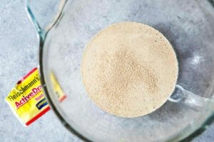
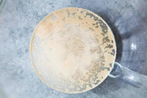
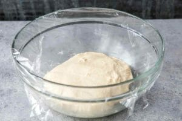
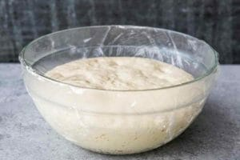
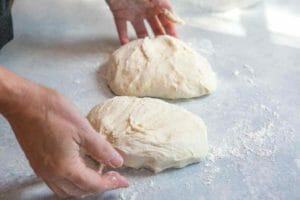
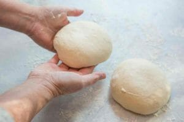

Prep time: 2 hoursCook time: 30 minutesYield: Makes 2 10-12-inch pizzas

Pizza dough is a yeasted dough which requires active dry yeast. Make sure the check the expiration date on the yeast package! Yeast that is too old may be dead and won't work. You can use all purpose flour instead of the bread flour that is called for in the recipe, but bread flour is higher in gluten than all- purpose flour and will make a crispier crust for your pizza. Cup measurements can vary depending on how you are scooping the flour (we fluff the flour, lightly scoop it, and level with a knife). So I recommend using a kitchen scale to measure out the flour amounts by weight. This is the only way you'll get a consistently accurate measurement.
INGREDIENTS
Pizza Dough: Makes enough dough for two 10-12 inch pizzas
- 1 1/2 cups (355 ml) warm water (105°F-115°F)
- 1 package (2 1/4 teaspoons) of active dry yeast
- 3 3/4 cups (490 g) bread flour
- 2 Tbsp olive oil (omit if cooking pizza in a wood-fired pizza oven)
- 2 teaspoons salt
- 1 teaspoon sugar
Pizza Ingredients
- Olive oil
- Cornmeal (to help slide the pizza onto the pizza stone)
- Tomato sauce (smooth, or puréed)
- Firm mozzarella cheese, grated
- Fresh soft mozzarella cheese, separated into small clumps
- Fontina cheese, grated
- Parmesan cheese, grated
- Feta cheese, crumbled
- Mushrooms, very thinly sliced if raw, otherwise first sautéed
- Bell peppers, stems and seeds removed, very thinly sliced
- Italian pepperoncini, thinly sliced
- Italian sausage, cooked ahead and crumbled
- Chopped fresh basil
- Baby arugula, tossed in a little olive oil, added as pizza comes out of the oven
- Pesto
- Pepperoni, thinly sliced
- Onions, thinly sliced raw or caramelized
- Ham, thinly sliced
MAKING THE PIZZA DOUGH
1 Proof the yeast:
Place the warm water in the large bowl of a heavy duty stand mixer. Sprinkle the yeast over the warm water and let it sit for 5 minutes until the yeast is dissolved.
 After 5 minutes stir if the yeast hasn't dissolved completely. The yeast should begin to foam or bloom, indicating that the yeast is still active and alive. (Note that if you are using "instant yeast" instead of "active yeast", no proofing is required. Just add to the flour in the next step.)
2 Make and knead the pizza dough:
Using the mixing paddle attachment, mix in the flour, salt, sugar, and olive oil on low speed for a minute. Then replace the mixing paddle with the dough hook attachment. Knead the pizza dough on low to medium speed using the dough hook about 7-10 minutes. If you don't have a mixer, you can mix the ingredients together and knead them by hand. The dough should be a little sticky, or tacky to the touch. If it's too wet, sprinkle in a little more flour.
3 Let the dough rise:
Spread a thin layer of olive oil over the inside of a large bowl. Place the pizza dough in the bowl and turn it around so that it gets coated with the oil. At this point you can choose how long you want the dough to ferment and rise. A slow fermentation (24 hours in the fridge) will result in more complex flavors in the dough. A quick fermentation (1 1/2 hours in a warm place) will allow the dough to rise sufficiently to work with. Cover the dough with plastic wrap.
 For a quick rise, place the dough in a warm place (75°F to 85°F) for 1 1/2 hours. For a medium rise, place the dough in a regular room temperature place (your kitchen counter will do fine) for 8 hours. For a longer rise, chill the dough in the refrigerator for 24 hours (no more than 48 hours). The longer the rise (to a point) the better the flavor the crust will have.
PREPARING THE PIZZAS
1 Preheat pizza stone (or pizza pan or baking sheet):
Place a pizza stone on a rack in the lower third of your oven. Preheat the oven to 475°F for at least 30 minutes, preferably an hour. If you don't have a pizza stone, you can use a pizza pan or a thick baking sheet; you need something that will not warp at high temperatures.
2 Divide the dough into two balls:
Remove the plastic cover from the dough. Dust your hands with flour and push the dough down so it deflates a bit. Divide the dough in half.
 Form two round balls of dough. Place each in its own bowl, cover with plastic and let sit for 15 minutes (or up to 2 hours).